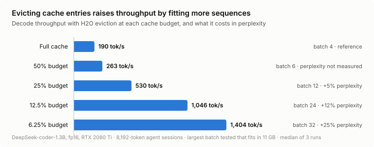
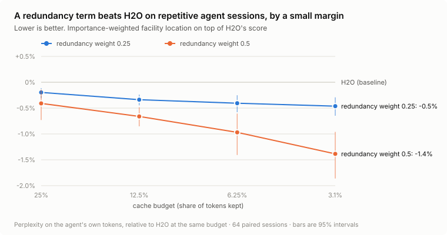
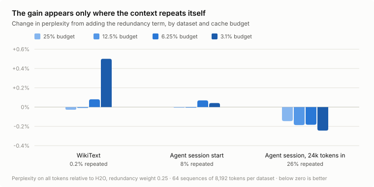
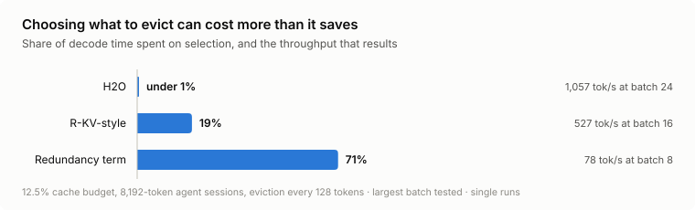

Redundancy-Aware KV-Cache Eviction with Weighted Facility Location
Abstract
Long contexts make the key-value (KV) cache the main memory cost of LLM inference, and evicting cached tokens is a common way to fit more sequences on a GPU. The standard heuristic, H2O, keeps the tokens that have received the most attention. That rule cannot tell when two cached tokens carry the same information, which happens constantly in coding-agent sessions, where the same files and logs are read again and again. I add a weighted facility-location term to H2O's score, so the kept set must cover every important token rather than simply contain the highest-scoring ones. On 8,192-token windows from real agent sessions with deepseek-coder-1.3b, the objective lowers perplexity on the agent's own tokens relative to H2O at every budget from 25% down to 3.1%, with 95% intervals that exclude zero: by 0.2% to 0.5% at the pre-chosen redundancy weight, and by 1.1% to 2.5% with pure facility location, a setting picked from an ablation and then confirmed on the full setup. The gain appears only on the most repetitive text. It is absent on WikiText, at the start of sessions and on 16,000-token sessions, where the stronger setting is up to 4% worse than H2O. But selection is expensive: at a 12.5% budget it takes 71% of decode time and cuts throughput below the no-eviction baseline. Separately, eviction with H2O gives 2.8× throughput at a 25% budget for about 5% higher perplexity, and on this machine all of that gain comes from fitting more sequences in memory, because decoding is bound by CPU kernel launches rather than by the GPU. Small task benchmarks with larger models agree on summarization, where WFL holds level with H2O, and disagree on retrieval: on RULER-style needle tasks, scoring tokens by attention from the question matters far more than redundancy, and an R-KV-style baseline that does so beats both H2O and WFL by more than 30 points at every budget.
1. Introduction
During decoding, a transformer stores the key and value vectors of every previous token so it does not recompute them. This KV cache grows linearly with context length and batch size. For deepseek-coder-1.3b in fp16, an 8,192-token context takes enough cache that only four sequences fit on an 11 GB RTX 2080 Ti. Cache eviction keeps a fixed budget of cached tokens and drops the rest, trading some quality for memory.
Choosing what to keep is a subset selection problem, which is what my research is about. Submodular functions, which have diminishing returns, are the standard tool for picking a subset that is both relevant and non-redundant. H2O [1] is effectively a modular objective: every token's value is its accumulated attention, independent of what else is kept. A modular objective will happily keep five copies of the same file read-out if each copy draws attention. A facility-location term fixes that, because a second copy of something already covered adds almost nothing.
This write-up asks whether that matters in practice. Contributions:
- A small inference engine with its own paged KV cache, in which every eviction policy shares the same protected sink and recent tokens and differs only in how the older tokens are chosen.
- A redundancy-aware objective (WFL) that mixes H2O's modular score with an importance-weighted facility-location term over key and value similarity, optimized by greedy pruning.
- A paired evaluation on real coding-agent trajectories and WikiText, with a direct measure of repetition, showing the gain appears only on the most repetitive data.
- Throughput measurements showing where the speedup from eviction comes from on this hardware, and what selection costs.
2. Background and related work
Attention-score eviction. H2O [1] keeps “heavy hitters”, the tokens with the largest accumulated attention, plus a window of recent tokens. Its selection is a top-k, so it is nearly free.
Attention sinks. StreamingLLM [2] observed that the first few tokens absorb a large share of attention regardless of content, and that dropping them collapses the model. All policies here protect the first four tokens; Section 5.4 confirms the effect.
Window-based importance. Some methods score cached tokens only by attention from the most recent queries rather than the whole history. In PRISM's terms [3] this is the graph-cut mutual-information objective, which is modular, so it reduces to H2O restricted to a window. It appears below as GCMI.
Redundancy-aware eviction. R-KV [4] targets reasoning models, whose outputs repeat themselves, and scores tokens by importance minus a redundancy penalty computed from key similarity. I implemented an R-KV-style baseline; the paper's exact thresholds and pooling were not available, so that baseline uses my own choices and should not be read as a reproduction.
Submodular subset selection. PRISM [3] defines a family of submodular information measures (facility-location, graph-cut and concave-over-modular forms) for targeted subset selection. The objective here borrows the facility-location form and weights it by H2O's importance scores.
3. Method
3.1 Eviction protocol
Text is processed in chunks. Whenever the cache exceeds its capacity C (a fraction of the context, the budget), it is cut back to C slots. Every policy keeps the first 4 tokens and the newest C/2 tokens, and selects the remaining slots from the older candidates. Eviction is permanent: an evicted token is never a candidate again. Selection runs independently for each (layer, KV head) pair, batched over all of them as tensors, so different heads keep different tokens.
3.2 Objective
Let V be the live slots of one (layer, KV head), A ⊆ V the slots kept, and wi the H2O score of slot i (its accumulated attention, normalized to sum to one). With λ ∈ [0, 1] the redundancy weight, WFL maximizes
The first term is H2O. The second is a weighted facility-location function: each slot i is “served” by its most similar kept slot, and important slots count more. With λ = 0 the objective is exactly H2O. For λ > 0, keeping a near-duplicate of a slot already kept adds little, so the budget goes to tokens that cover something new. Similarity combines keys and values:
with sharpening exponent p = 1 unless stated. Requiring both keys and values to agree means two slots count as duplicates only if they would be attended to similarly and would contribute similar content. Both terms are monotone and the facility-location term is submodular for non-negative similarities, so f is monotone submodular.
3.3 Optimization
Standard greedy selection adds slots one at a time until the budget is full. Usually only a few slots must go at each eviction, so I run greedy in reverse: start from all candidates and repeatedly remove the slots whose removal loses the least of f, eight at a time. The loss of removing slot j is computed from each slot's best and second-best kept neighbour, so one pass over the similarity matrix gives every slot's removal cost. The similarity matrix is quadratic in the number of candidates per head, and that is the cost Section 5.5 measures.
3.4 Baselines
- Full: no eviction (the quality reference).
- Recency: sinks plus the newest tokens only (StreamingLLM).
- Random: sinks, recent tokens, and a uniform random choice of the rest.
- H2O: top-k by accumulated attention over the whole history.
- GCMI: top-k by attention from the last 32 queries (windowed H2O).
- R-KV-style: λ·importance − (1 − λ)·redundancy, with λ = 0.1 and a 32-query window.
4. Experimental setup
Engine and hardware. All runs use my own engine with a KV cache that supports masking and physical compaction of slots, on one RTX 2080 Ti (11 GB) in fp16. An RTX A6000 in the same machine was used to check the speed results. The model is deepseek-coder-1.3b-instruct; TinyLlama was used for early development only. Before any results, the engine is gated against Hugging Face's own generation: greedy continuations of short and long prompts, single and batched, must match token for token, except where the top two logits are within rounding of each other. For the task-benchmark models (Section 5.6), Llama-3.1-8B-Instruct passes in bf16, and DeepSeek-R1-Distill-Qwen-1.5B matches exactly on all 18 cases in fp32; in bf16 one of its continuations diverges where the top two logits are 0.375 apart, which the exact fp32 match attributes to rounding.
Data. Coding-agent sessions come from nebius/SWE-rebench-openhands-trajectories [5]: OpenHands agents working on real GitHub issues, rendered as plain text with system, assistant and tool messages. I build three 8,192-token sets of 64 sequences each:
- WikiText, a control with almost no repetition.
- Agent start: the first 8,192 tokens of each session.
- Agent late: 8,192 tokens taken about 24k tokens into each session, where the agent has re-read files and logs many times.
Additional runs use 4,096-token windows, 16,000-token sessions (32 sequences), and a 96-sequence replicate.
Repetition. I measure repetition as the share of positions whose preceding 16 tokens already occurred earlier in the same sequence. It is 0.2% for WikiText, 8% for agent starts and 26% for late agent windows.
Metric. Perplexity is measured only on positions after the cache first exceeds its budget, since earlier positions are identical across policies. For agent data I also report perplexity on the agent's own tokens (the assistant messages), which is what an agent generates; tool output is largely copied text. Text is fed 64 tokens at a time and the cache is cut back after each chunk. Every policy sees the same sequences, so comparisons are paired: I report exp(means[NLLpolicy(s) − NLLH2O(s)]) − 1 over sequences s, as a percentage change against H2O, with a 95% bootstrap interval over sequences (5,000 resamples). Negative is better. Because this averages per-sequence log-perplexity, it can differ slightly from the ratio of pooled perplexities.
Speed. Throughput is measured with 8,192-token prompts and 256 decoded tokens, evicting every 128 tokens, at the largest batch that fits in memory, as the median of three repeats.
5. Results
5.1 Eviction raises throughput by fitting more sequences

With the full cache only four 8,192-token sequences fit, for 190 tokens/s. A 25% budget fits 12 sequences and reaches 530 tokens/s (2.8×) at 4.8% higher perplexity; 12.5% reaches 1,046 tokens/s at 11.6%; 6.25% reaches 1,404 tokens/s at 24.6%.
The time per decode step barely moves: about 21 ms with the full cache at batch 4, and about 23 ms with a 6.25% budget at batch 32. Throughput scales almost exactly with batch size at every budget. A step that does not get faster as the batch grows eightfold, or as the cache shrinks sixteenfold, is not limited by GPU memory bandwidth or compute. The same 21 ms appeared on an RTX A6000, a much faster GPU, which points to the CPU-side cost of launching kernels. On this machine, then, eviction helps only by fitting more sequences into memory, and the per-token latency benefit that eviction should have on a memory-bound decoder could not be observed.
5.2 WFL beats H2O on late agent sessions
Table 1. Change in perplexity on the agent's own tokens relative to H2O, late agent windows (8,192 tokens, 64 sequences). 95% bootstrap interval in brackets. Blue: interval below zero. Orange: interval above zero.
| Policy | 25% | 12.5% | 6.25% | 3.1% |
|---|---|---|---|---|
| H2O perplexity | 2.287 | 2.478 | 2.852 | 3.487 |
| Full-cache perplexity | 2.190 | 2.223 | 2.252 | 2.285 |
| WFL, λ = 1 | −1.08% [−1.82, −0.51] | −1.37% [−1.95, −0.87] | −1.60% [−2.47, −0.88] | −2.50% [−3.33, −1.70] |
| WFL, λ = 0.5 | −0.41% [−0.74, −0.14] | −0.66% [−0.86, −0.48] | −0.97% [−1.41, −0.61] | −1.39% [−1.86, −0.96] |
| WFL, λ = 0.25 | −0.20% [−0.31, −0.11] | −0.34% [−0.45, −0.24] | −0.41% [−0.58, −0.25] | −0.46% [−0.65, −0.30] |
| R-KV-style | −1.53% [−3.13, −0.18] | −0.44% [−2.62, +1.50] | +5.6% [+3.8, +7.3] | +20.5% [+16.0, +25.6] |
| GCMI (windowed H2O) | +3.5% | +8.5% | +11.8% | +11.5% |
| Random | +12.3% | +23.6% | +31.9% | +39.0% |
| Recency | +21.1% | +31.9% | +47.1% | +53.8% |
WFL beats H2O at every budget, and the margin grows as the budget shrinks: with λ = 0.5 it goes from 0.4% at a 25% budget to 1.4% at 3.1%. That is the expected pattern. When the budget is generous there is room for duplicates, and when it is tight every duplicate displaces something unique. The effect is small but very consistent, because the comparison is paired and WFL changes only a few of H2O's choices. A 96-sequence replicate with λ = 0.25 gave −0.20%, −0.34%, −0.41% and −0.43%, matching the table almost exactly.
λ = 1 was not part of the original plan. It came out best in the 4,096-token ablations (Section 5.4), so I reran it on the full 8,192-token setup as a confirmation, with the rule fixed in advance that it counts only if it closes at least 10% of the gap between H2O and the full cache on late agent windows and is no worse than the R-KV-style baseline. It closes 21% of the gap at a 25% budget and 11% at 12.5%, but only 5% and 4% at 6.25% and 3.1%. Against R-KV-style it is within noise at 25% and 12.5% (+0.46% [−0.55, +1.68] and −0.94% [−2.47, +0.83], paired) and much better below that. So it passes at the two larger budgets, on this dataset. Section 5.3 shows it does not carry over to the others.
Apart from λ = 1, the R-KV-style baseline is the strongest method at a 25% budget but collapses at small budgets, where penalizing redundancy without H2O's long-run importance throws away tokens the model still needs. Random and recency confirm that the choice of older tokens matters a great deal: keeping only recent tokens costs 21% to 54%.

5.3 The gain appears only on the most repetitive data
Table 2. WFL relative to H2O on all tokens, by dataset and budget (8,192 tokens, 64 sequences each). Grey: interval includes zero.
| Dataset | Repetition | λ | 25% | 12.5% | 6.25% | 3.1% |
|---|---|---|---|---|---|---|
| WikiText | 0.2% | 0.25 | −0.03% | −0.01% | +0.08% | +0.50% |
| Agent start | 8% | 0.25 | −0.01% | −0.01% | +0.07% | +0.04% |
| Agent late | 26% | 0.25 | −0.15% | −0.19% | −0.18% | −0.24% |
| WikiText | 0.2% | 1 | −0.08% | +0.26% | +0.52% | −1.49% |
| Agent start | 8% | 1 | +0.08% | +0.31% | +0.68% | +0.11% |
| Agent late | 26% | 1 | −0.61% | −0.67% | −0.56% | −1.11% |
On WikiText and at the start of sessions WFL is indistinguishable from H2O at large budgets and slightly worse at small ones, where diversity costs it tokens that were important for their own sake. Only on late agent windows, where a quarter of 16-token spans are verbatim repeats, does it help, and there it helps at every budget. λ = 1 sharpens both sides: it is the best setting on late windows, and on agent starts it is worse than H2O at three of four budgets (on agent tokens by up to 1.9%). On WikiText it is mixed, worse at 12.5% and 6.25% and 1.5% better at 3.1%.
The 16,000-token sessions (32 sequences, budgets 12.5% to 3.1%) complicate the repetition story. They are about 16% repetitive, twice the 8k session starts, yet λ = 0.25 is within 0.25% of H2O on agent tokens at every budget and λ = 1 is worse at all three, by 0.37%, 1.08% and 4.07% on agent tokens. So the objective helps where there is a lot of redundancy, but this repetition measure alone does not predict when it will. One guess is that what matters is how much of the repeated content is old enough to be a candidate for eviction, which a late window has more of than a session start of any length. I have not tested that. (The gains are smaller on all tokens than on agent tokens because much of the tool output is copied text that is easy to predict under any policy.)

5.4 Ablations
Ablations use 4,096-token late agent windows (64 sequences) and report the change on agent tokens relative to H2O at budgets of 25% and 6.25%. Unless varied, λ = 0.25, p = 1, pruning step 8, eviction every 64 tokens and recent share ½.
Table 3. WFL ablations, change relative to H2O on agent tokens. Selection time is seconds per eviction across all heads at a 25% budget.
| Setting | 25% | 6.25% | Selection (s) |
|---|---|---|---|
| Default (λ = 0.25) | −0.32% | −0.65% | 0.61 |
| λ = 0.1 | −0.10% | −0.21% | 0.59 |
| λ = 1.0 (facility location only) | −1.67% | −2.73% | 0.58 |
| Similarity exponent p = 2 | −0.25% | −0.49% | 0.59 |
| Similarity exponent p = 4 | −0.14% | −0.21% | 0.58 |
| Prune 1 slot per step | −0.33% | −0.65% | 4.18 |
| Prune 32 slots per step | −0.34% | −0.49% | 0.20 |
| Evict every 16 tokens | −0.37% | −0.51% | 0.19 |
| Evict every 256 tokens | −0.38% | −0.78% | 2.62 |
| Recent share 0.1 | −0.13% | −0.82% | 0.58 |
| Recent share 0.25 | −0.33% | −0.76% | 0.58 |
| Recent share 0.75 | −0.53% | −0.71% | 0.58 |
Redundancy weight. The gain grows steadily with λ, and pure facility location (λ = 1, with H2O's scores only as weights) is best, at −1.7% and −2.7%. That led to the 8,192-token confirmation in Section 5.2, where λ = 1 also came out best on late windows (−1.1% and −1.6% at the same two budgets) but was worse than H2O on the other datasets (Section 5.3). Similarity. Sharpening the similarity (p > 1) shrinks the gain, consistent with near-duplicates rather than exact copies being what matters. Pruning step. Removing eight slots per greedy step gives the same quality as removing one, at a seventh of the cost. Removing 32 per step is three times cheaper again and gives up some quality at small budgets. Robustness. The gain holds at every eviction interval and recent-window share tried. At 16,000 tokens from session starts, WFL with λ = 0.25 was within noise of H2O at 12.5%, 0.2% better at 6.25% and 0.3% worse at 3.1% (Section 5.3).
Attention sinks. With no protected first tokens, recency-only eviction reached perplexity 5.1 at a 25% budget and 19.8 at 6.25%, against 2.4 and 3.4 with sinks. H2O was unaffected (2.16 either way), because it keeps the sinks on its own: they have the highest accumulated attention.
5.5 Selection cost

H2O's selection is a top-k and takes under 1% of decode time, about 0.6 ms per eviction. WFL builds a similarity matrix over the candidates of every head and takes about 0.6 s per eviction at a 12.5% budget, roughly a thousand times longer, which is 71% of decode time. At batch 8, the largest tested for WFL, throughput is 78 tokens/s, below the 190 tokens/s of not evicting at all, and selection's share of time grows with batch size (24% at batch 1, 71% at batch 8), so larger batches would not rescue it. The R-KV-style baseline sits in between at 19%. A 1% quality gain does not pay for this.
5.6 Task benchmarks
Perplexity under teacher forcing does not show whether eviction changes a model's answers, so I ran three small task benchmarks on the RTX A6000 in bf16 with larger models. All policies keep the same sinks and recent half as before; WFL uses λ = 1. For LongBench [6] and the RULER-style tasks [7] I use one-shot prompt compression: the prompt is prefilled with the full cache, each policy cuts it to the budget once (a share of the prompt), and the answer is decoded greedily with no further eviction. As in SnapKV-style evaluations, the first answer token is therefore predicted from the full-cache prefill and is the same for every policy. On the RULER-style tasks that token carries no answer content: the prompt ends with RULER's answer prefix, and the shared token is the colon or line break after it, or the “VAR” that begins every variable name. On LongBench's short-answer tasks it can be the whole answer: 20% of compressed predictions on qasper and multifieldqa_en and 38% on hotpotqa are a single word, often identical across every policy and budget, which pulls the policies' scores together and toward the full cache on those tasks. The R-KV-style baseline's 32-query window is then the end of the prompt, which holds the question. For prompts this long, WFL considers only the older candidates with the highest H2O scores, twice as many as it has slots to fill, and prunes in at most 64 rounds. For MATH-500 [8] the cache is cut back every 64 generated tokens, with the budget given in slots, and all policies decode with the same random numbers (temperature 0.6, top-p 0.95) so that comparisons are paired. Differences from H2O use the same paired bootstrap over examples as above.
Table 4. Task scores out of 100 (MATH: accuracy in percent). Blue: best compressed method in each column. (a) RULER-style, Llama-3.1-8B-Instruct, 8,192-token prompts, five needle and variable-tracking tasks × 10 examples, full cache 92.8. (b) LongBench, Llama-3.1-8B-Instruct, prompts truncated in the middle to 16k tokens, mean of five task means (qasper, multifieldqa_en, hotpotqa and lcc with 20 examples; gov_report with 10), full cache 51.8. (c) MATH-500, DeepSeek-R1-Distill-Qwen-1.5B, 20 problems from levels 1–2, one sample each, 4,096-token cap, full cache 55.
| (a) RULER-style | 50% | 25% | 12.5% | 6.25% |
|---|---|---|---|---|
| Recency | 51.6 | 31.7 | 18.7 | 8.7 |
| H2O | 59.7 | 26.4 | 11.7 | 4.9 |
| R-KV-style | 90.8 | 93.6 | 91.6 | 91.1 |
| WFL, λ = 1 | 59.3 | 38.7 | 14.9 | 4.1 |
| (b) LongBench | 50% | 25% | 12.5% | 6.25% |
| Recency | 43.2 | 40.1 | 37.0 | 33.4 |
| H2O | 51.0 | 46.9 | 44.8 | 41.0 |
| R-KV-style | 51.8 | 50.2 | 49.1 | 44.4 |
| WFL, λ = 1 | 51.2 | 48.0 | 46.4 | 41.4 |
| (c) MATH-500 (slots) | 2048 | 1024 | 512 | 256 |
| Recency | 60 | 60 | 25 | 15 |
| H2O | 55 | 60 | 65 | 45 |
| R-KV-style | 70 | 45 | 45 | 40 |
| WFL, λ = 1 | 60 | 65 | 70 | 50 |
Retrieval. The R-KV-style baseline keeps the needle at every budget, while H2O and WFL lose it, both falling below 15 at a 12.5% budget. The deciding factor is which attention is counted, not redundancy: attention from the question finds the needle, and attention accumulated over the whole prompt does not. WFL inherits H2O's weights and cannot recover it. This is the GCMI-versus-H2O distinction from Section 6, with the opposite outcome from perplexity on late agent sessions.
LongBench. WFL averages between H2O and R-KV-style, and on every individual task its difference from H2O has an interval that includes zero. R-KV-style is significantly better than H2O on multifieldqa_en at 25% and below (+9 to +14) and on qasper at 25% (+8), but significantly worse on gov_report at 25% and below (−3.4 to −4.5), where WFL is level with H2O (within 0.6). Summarization needs coverage of the whole document, which question-window importance does not reward and facility location does. With 10 to 20 examples per task this is suggestive rather than settled.
Reasoning. The MATH run is dominated by the generation cap: half of the full-cache samples hit 4,096 tokens without a final answer, so accuracy mostly measures whether the model finished in time. WFL is 5 points above H2O at every budget, with intervals of about ±20 points. Recency falls 30 to 40 points behind H2O at 512 and 256 slots, and R-KV-style is 20 points behind at 512; those are the only intervals that exclude zero. R-KV [4] reports its method doing well on reasoning traces, but this baseline is not a reproduction (Section 2), and this run is too small and too truncated to test that either way.
6. Discussion
Is the idea right? Partly. The diminishing-returns structure does what it should on the most redundant context: it helps, more so at tight budgets. But H2O is a very strong baseline. On late agent windows at a 12.5% budget, H2O is 13% worse than the full cache on agent tokens (paired), and WFL closes about 5% of that gap at λ = 0.5 and 11% at λ = 1. The stronger setting is not free either: it costs perplexity on every other dataset, so in practice the weight would have to depend on how redundant the context is, which would need its own estimate.
Making it cheap. The cost comes from computing all-pairs similarity per head at every eviction. Ways to cut it: compute similarity on a low-dimensional sketch of the keys; restrict it to the few hundred tokens H2O is about to keep or drop rather than all candidates; share one selection across the heads of a layer, as R-KV does; or evict less often with a larger slack. The ablations suggest the quality survives coarser optimization (32 slots per step loses little at 25%), so there is room to trade accuracy for speed.
Which importance to cover. The task benchmarks suggest that the facility-location term and the importance weights are separate choices. Question-window weights win on retrieval and QA, and coverage helps on summarization, so WFL with question-window weights instead of H2O's is the obvious combination. I have not run it.
A side observation. On WikiText and agent starts at a 3.1% budget, windowed H2O (GCMI) beat full-history H2O by about 4% on all tokens, but it was 2% to 4% worse on late agent windows. Which notion of importance is right seems to depend on how far back the text needs to reach, which the repetition measure partly captures.
7. Limitations
- The machine was CPU-bound, so the decode step was about 21 ms at every cache size. The latency benefit of a smaller cache on a memory-bound decoder could not be measured, and throughput comparisons reflect only batch capacity.
- The models are small (1.3B and 1.1B parameters). Larger models have more heads and longer useful context, and both the gain and the cost may scale differently.
- The quality metric is perplexity under teacher forcing, not whether an agent completes its task. Small perplexity differences may or may not change behaviour.
- The task benchmarks are small subsets: 10 examples per RULER-style task at one length, 10 to 20 per LongBench task with prompts truncated to 16k tokens, and 20 MATH problems from the two easiest levels with a 4,096-token cap and one sample each. Many intervals are ±10 points or wider. The RULER-style tasks are my own reimplementation with a WikiText haystack, and WFL used a restricted candidate pool on long prompts. With one-shot compression the first answer token comes from the full cache, so on short-answer LongBench tasks the scores partly measure the full cache rather than the policy (Section 5.6). None of these numbers are comparable to published tables. Their timings are not reported because the GPU was shared with other jobs.
- The R-KV-style baseline is not a faithful reproduction of R-KV.
- Hyperparameters (λ, p, pruning step) were explored on 4k windows of the same data source used for the main results, though on different windows. λ = 1 was chosen after seeing those results and checked once on the 8k setup with a rule set in advance; it passed at two budgets on one dataset.
8. Conclusion
Adding a weighted facility-location term to H2O makes KV-cache eviction redundancy-aware. On the most repetitive coding-agent context it gives a small but consistent improvement over H2O that grows as the budget shrinks, up to 2.5% with pure facility location, and on less repetitive text it gives nothing or makes things worse. As implemented, selection is far too slow to use. The more practical finding is about the hardware: on this machine, eviction speeds things up only because more sequences fit in memory. On small task benchmarks it ties H2O on LongBench and does not help retrieval, where what matters is weighting tokens by attention from the question. A cheaper approximation of the objective with question-window weights, measured on a GPU-bound setup and on larger task sets, is the natural next step.
References
- Z. Zhang et al. H2O: Heavy-Hitter Oracle for Efficient Generative Inference of Large Language Models. NeurIPS 2023.
- G. Xiao et al. Efficient Streaming Language Models with Attention Sinks. ICLR 2024.
- S. Kothawade et al. PRISM: A Rich Class of Parameterized Submodular Information Measures for Guided Data Subset Selection. AAAI 2022.
- Z. Cai et al. R-KV: Redundancy-aware KV Cache Compression for Reasoning Models. NeurIPS 2025.
- Nebius. SWE-rebench OpenHands trajectories (
nebius/SWE-rebench-openhands-trajectories). CC-BY-4.0. - Y. Bai et al. LongBench: A Bilingual, Multitask Benchmark for Long Context Understanding. ACL 2024.
- C.-P. Hsieh et al. RULER: What's the Real Context Size of Your Long-Context Language Models? COLM 2024.
- D. Hendrycks et al. Measuring Mathematical Problem Solving With the MATH Dataset. NeurIPS 2021. MATH-500 subset from H. Lightman et al., Let's Verify Step by Step, 2023.
Appendix: reproducing the results
pip install torch transformers datasets
python tests/test_policies.py
python tests/test_longctx.py # benchmark code, tiny random model on the CPU
python scripts/gate.py # correctness gate, needs a GPU
python scripts/run_eviction.py --n-seqs 8 # small sweep on WikiText
python scripts/analyze.py results/batch/core8k_late.jsonl --masked
python scripts/make_figures.py
# task benchmarks (Section 5.6; also needs rouge, fuzzywuzzy, math-verify)
bash scripts/bench_all.sh long # RULER-style tasks, then LongBench
bash scripts/bench_all.sh math # MATH-500
python scripts/analyze_bench.py results/bench/ruler_llama31.jsonlEvery number above comes from the raw results in results/batch/ of the repository: core8k_*.jsonl for Tables 1 and 2, core4k_late.jsonl and sweep_*.jsonl for Table 3, long16k.jsonl, core8k_late_n96.jsonl, and speed.jsonl for Sections 5.1 and 5.5. Table 4 comes from results/bench/: ruler_llama31.jsonl, longbench_llama31.jsonl and math500_r1qwen15.jsonl.